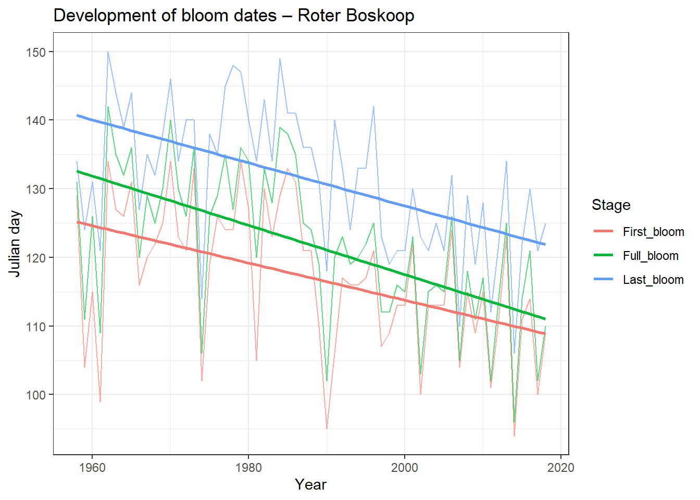
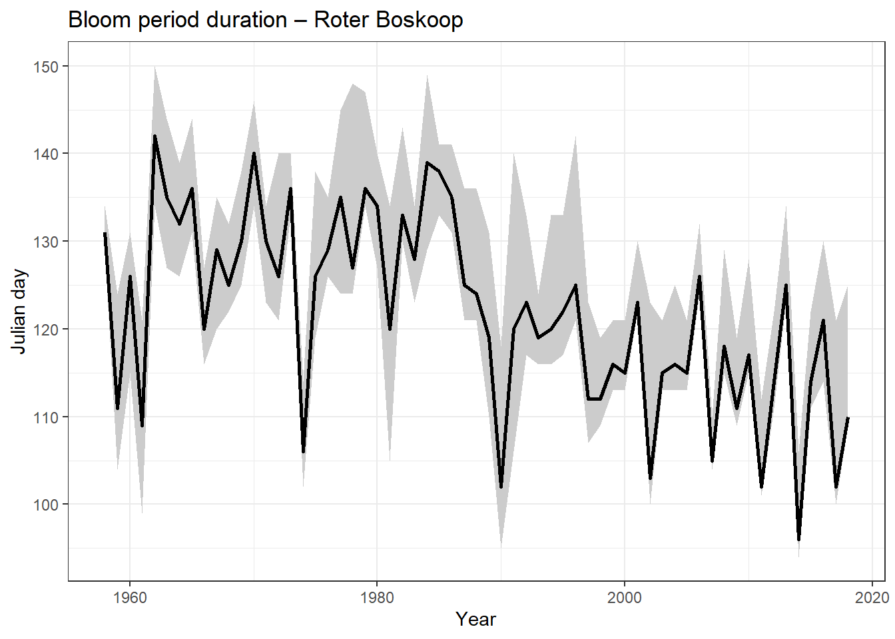
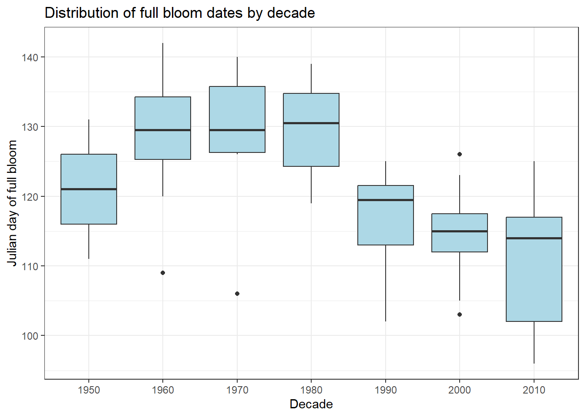
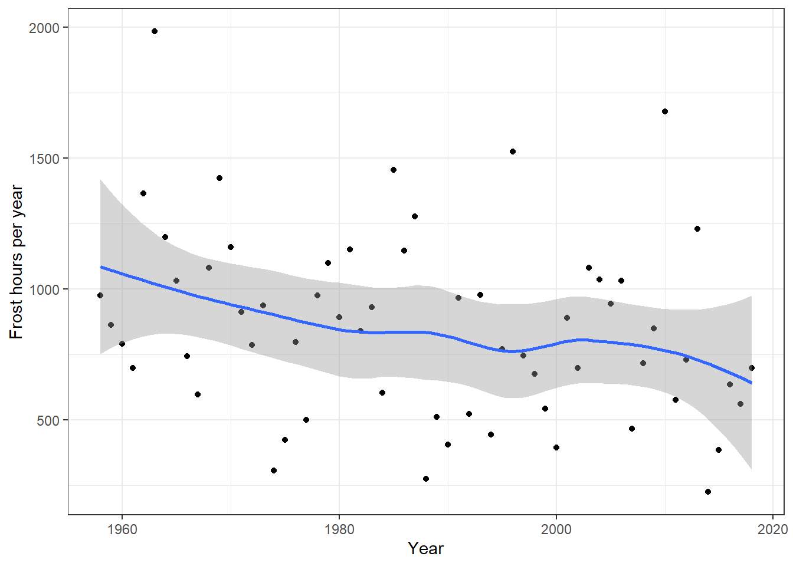
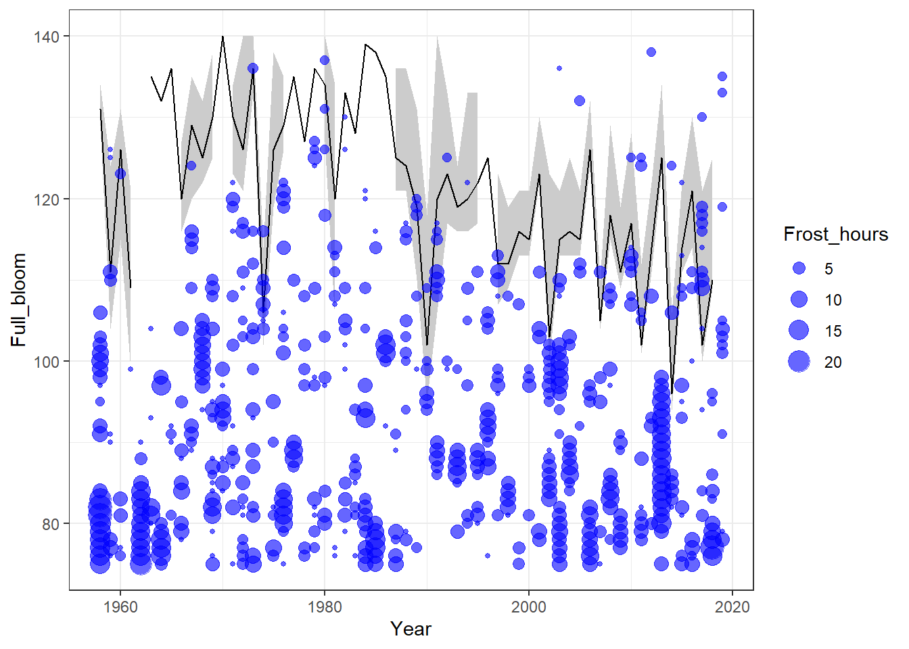

Chapter 33 - Frost risk analysis
This chapter examines how flowering timing and frost events interact for the apple cultivar Roter Boskoop. Using long-term phenology and weather records, it explores changes in bloom timing, the occurrence of frost events, and whether the risk of spring frost during bloom has changed over time.
Developement of bloom period
Illustrate the development of the bloom period over the duration of the weather record. Use multiple ways to show this - feel free to be creative.
library(tidyverse)
library(chillR)
Roter_raw <- read_tab("data/Roter_Boskoop_bloom_1958_2019.csv")
Roter <- Roter_raw %>%
pivot_longer(First_bloom:Last_bloom,
names_to = "Stage",
values_to = "YEARMODA") %>%
mutate(Year = as.numeric(substr(YEARMODA, 1, 4)),
Month = as.numeric(substr(YEARMODA, 5, 6)),
Day = as.numeric(substr(YEARMODA, 7, 8))) %>%
make_JDay()Illustration 1 – Bloom dates over time (lines + trend)
ggplot(Roter, aes(Year, JDay, col = Stage)) +
geom_line(alpha = 0.6) +
geom_smooth(method = "lm", se = FALSE) +
theme_bw() +
ylab("Julian day") +
xlab("Year") +
ggtitle("Development of bloom dates – Roter Boskoop")## `geom_smooth()` using formula = 'y ~ x'
Illustration 2 – Bloom duration ribbon
Ribbon_Roter <- Roter %>%
select(Year, Stage, JDay) %>%
pivot_wider(names_from = Stage, values_from = JDay)
ggplot(Ribbon_Roter, aes(Year)) +
geom_ribbon(aes(ymin = First_bloom,
ymax = Last_bloom),
fill = "grey80") +
geom_line(aes(y = Full_bloom), linewidth = 1) +
theme_bw() +
ylab("Julian day") +
xlab("Year") +
ggtitle("Bloom period duration – Roter Boskoop")
Illustration 3 – Bloom timing distribution (boxplots by decade)
Roter$Decade <- floor(Roter$Year / 10) * 10
ggplot(Roter %>% filter(Stage == "Full_bloom"),
aes(factor(Decade), JDay)) +
geom_boxplot(fill = "lightblue") +
theme_bw() +
ylab("Julian day of full bloom") +
xlab("Decade") +
ggtitle("Distribution of full bloom dates by decade")
Occurence of frost events
Evaluate the occurrence of frost events at Klein-Altendorf since 1958. Illustrate this in a plot.
CKA_weather <- read_tab("data/TMaxTMin1958-2019_patched.csv")
frost_df <- data.frame(
lower = c(-1000, 0),
upper = c(0, 1000),
weight = c(1, 0)
)
frost_model <- function(x)
step_model(x, frost_df)
hourly <- stack_hourly_temps(CKA_weather, latitude = 50.6)
frost <- tempResponse(hourly,
models = c(frost = frost_model))
ggplot(frost, aes(End_year, frost)) +
geom_point() +
geom_smooth() +
theme_bw() +
ylab("Frost hours per year") +
xlab("Year")## `geom_smooth()` using method = 'loess' and formula = 'y ~ x'
- The plot shows how many frost hours occurred each year at Klein-Altendorf since 1958
- There is a lot of variation between years, with some years having many frost hours and others having fewer
- The smoothed line suggests that frost hours have generally decreased over time
- Earlier years seem to have more frequent frost events than more recent years
- In the last decades, frost hours appear to be lower on average
- However, frost events still occur in some years, so frost risk has not completely disappeared
- Overall, the plot suggests a declining trend in frost occurrence, but with strong year-to-year variability
Spring frost and frost events
Produce an illustration of the relationship between spring frost events and the bloom period of ‘Roter Boskoop’.
frost_model_no_summ <- function(x)
step_model(x, frost_df, summ = FALSE)
hourly$hourtemps$frost <- frost_model_no_summ(hourly$hourtemps$Temp)
Daily_frost_hours <- aggregate(hourly$hourtemps$frost,
by = list(hourly$hourtemps$YEARMODA),
FUN = sum)
Daily_frost <- make_JDay(CKA_weather)
Daily_frost$Frost_hours <- Daily_frost_hours$x
Daily_frost$Frost_hours[Daily_frost$Frost_hours == 0] <- NA
Ribbon_Roter <- Roter %>%
select(Year, Stage, JDay) %>%
pivot_wider(names_from = Stage, values_from = JDay)
ggplot(Ribbon_Roter, aes(Year)) +
geom_ribbon(aes(ymin = First_bloom,
ymax = Last_bloom),
fill = "grey80") +
geom_line(aes(y = Full_bloom)) +
geom_point(data = Daily_frost,
aes(Year, JDay, size = Frost_hours),
col = "blue", alpha = 0.6) +
theme_bw() +
ylim(75, 140)
Trend of risk
Evaluate how the risk of spring frost for this cultivar has changed over time. Has there been a significant trend
Daily_frost$Bloom_phase <- "Before bloom"
Daily_frost$Bloom_phase[
Daily_frost$JDay >= Ribbon_Roter$First_bloom[
match(Daily_frost$Year, Ribbon_Roter$Year)
]] <- "During bloom"
Daily_frost$Bloom_phase[
Daily_frost$JDay >
Ribbon_Roter$Last_bloom[
match(Daily_frost$Year, Ribbon_Roter$Year)
]] <- "After bloom"
Bloom_frost <- aggregate(Daily_frost$Frost_hours,
by = list(Daily_frost$Year,
Daily_frost$Bloom_phase),
FUN = function(x) sum(x, na.rm = TRUE))
DuringBloom <- Bloom_frost[
Bloom_frost$Group.2 == "During bloom",]
library(Kendall)
Kendall(DuringBloom$Group.1, DuringBloom$x)## tau = 0.0333, 2-sided pvalue =0.74038##
## Call:
## lm(formula = DuringBloom$x ~ DuringBloom$Group.1)
##
## Coefficients:
## (Intercept) DuringBloom$Group.1
## -91.48652 0.04786- The Kendall test shows no significant trend in frost hours during bloom (p ≈ 0.74)
- The linear regression slope is very small and close to zero
- This suggests that frost risk during bloom has not changed clearly over time
- Even though overall frost has decreased, frost events can still happen during flowering